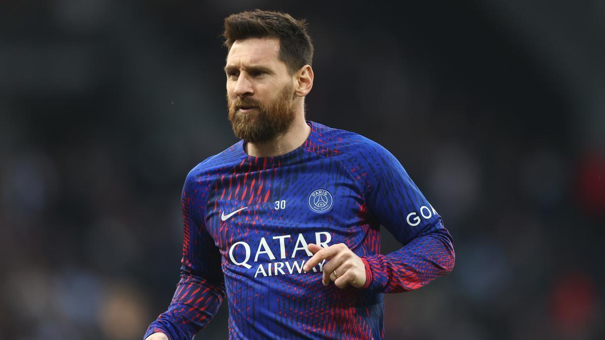
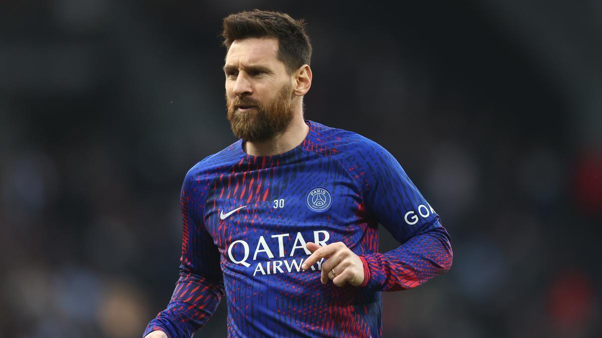

Leonel messi idolo Argentino
Lionel Andrés Messi Cuccittini nació el 24 de junio de 1987 en Rosario, Argentina.
Desde muy
chico mostró un talento único para el fútbol.
A los 11 años le diagnosticaron un problema
hormonal de crecimiento, pero el FC Barcelona apostó por él y lo llevó a España, donde inició una
carrera legendaria.
Debutó en el Barça en 2004, y en 17 años ganó 35 títulos, marcó 672 goles y se convirtió en el
máximo ídolo del club. En 2021 se unió al PSG, y en 2023 pasó al Inter Miami, revolucionando el
fútbol en Estados Unidos.
Con la selección argentina, Messi fue campeón de la Copa América 2021, la Finalissima 2022 y logró
su máxima gloria en el Mundial de Catar 2022, consagrándose campeón del mundo y mejor jugador del
torneo.
Fuera de la cancha, está casado con Antonela Roccuzzo, su amor de toda la vida, y tiene tres hijos:
Thiago, Mateo y Ciro. Es humilde, familiar y dirige una fundación solidaria. Ganó 8 Balones de Oro y
es considerado por millones como el mejor jugador de fútbol de todos los tiempos.

El Gol "Maradoniano"
Una de las jugadas más icónicas de Lionel Messi ocurrió el 18 de abril de 2007, en un partido de la Copa del Rey entre el FC Barcelona y el Getafe. En esa ocasión, Messi tomó el balón en su propio campo y, en una carrera espectacular, eludió a varios defensores y al portero para anotar un gol que recordó al legendario tanto de Diego Maradona en el Mundial de 1986. Este gol es ampliamente considerado como uno de los mejores de su carrera y de la historia del fútbol
Leo Messi
El debutó en el FC Barcelona en 2004, donde jugó 17 temporadas, ganó 35 títulos y se convirtió
en el máximo goleador histórico del club con 672 goles.
En 2021 pasó al Paris Saint-Germain
(PSG), donde jugó dos temporadas y ganó dos ligas francesas.
En 2023 llegó al Inter Miami,
revolucionando el fútbol estadounidense y ganando la Leagues Cup en su primera participación.
Logros en los distintos clubes
| Clubes | Años | Partidos | Goles |
|---|---|---|---|
| Fc Barcelona | 2004-2021 | . 778 . | . 672 . |
| Paris Saint-Germain | 2021-2023 | . 75 . | . 32 . |
| Inter Miami | 2023 - hoy | . 20 + . | . 17 . |
 
